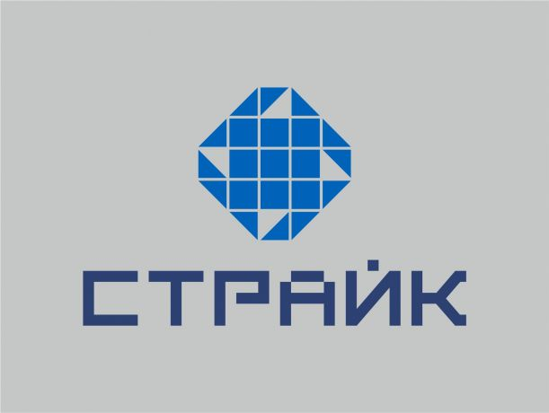

Видео

MITEX 2026 · Россия · Стенд 6A1402
СТРАЙК, ООО
Карточка проверена 10 ноября 2026, 09:25 · Источник ↗ · Снимок оригинальной карточки ↗
О компании
Будучи основанным в 2013 году, предприятие выдержало проверку временем, при этом сохранив желание ставить перед собой амбициозные цели и, главное, успешно реализовывать задуманное. Особой вехой стоит 2017 год, когда новые производственные и административно-бытовые площади были введены в эксплуатацию, закуплено современное высокотехнологичное оборудование. Залогом перспективного долгосрочного развития является молодая, опытная, инициативная, ответственная команда специалистов-единомышленников. Мы готовы к комплексному рассмотрению всех реальных предложений по производству крепежа, пластиковых изделий, а также контактных групп для авто светотехники и уверены, что представленная информация о нашем предприятии послужит отправной точкой расширения взаимовыгодного сотрудничества с ООО «СТРАЙК».
Контакты
Все контактные сведения из карточки
Контакты Адрес Производства/Офис Телефон: +7(909)275-90-00 E-mail: info@strike33.ru Адрес: 601110, Россия, Владимирская область, г. Костерёво, ул. Писцова, д.50 Веб-сайт: https://strike33.ru E-mail: info@strike33.ru Телефон: +7(903)830-92-72
Все рубрики участника
Mitex - Рубрикатор
- 12. Крепеж, метизы, скобяные изделия
Зал
- Зал № 6
Участник выставки
- MITEX
- MITEX FASTENERS
Фотографии и изображения
Видео, каталоги и документы
Каталог продукции участника
Материалы каталога
Крепление для накладных нержавеющих моек к столешнице Крепление для врезных нержавеющих моек к столешнице Хомут "Клип-Трек" (Clip-Track), силовой пластиковый для соединения элементов круглой формы
Материалы каталога
Крепление для накладных нержавеющих моек к столешнице Крепление для накладной мойки к столешнице располагается снизу столешницы и плотно крепит накладную мойку к ней, не давая мойке смещаться по отношению к краю тумбы для мойки.
Материалы каталога
Крепление для врезных нержавеющих моек к столешнице Крепление для врезной мойки к столешнице располагается снизу столешницы и плотно крепит врезную мойку к ней, не давая мойке смещаться по отношению к краю выреза отверстия в столешнице.
Материалы каталога
Хомут "Клип-Трек" (Clip-Track), силовой пластиковый для соединения элементов круглой формы Хомут силовой пластиковый для соединения элементов круглой формы «Клип-Трек» (Clip-Track) многоразовый, применяется для обеспечения надежного соединения и герметичности штуцеров, трубок, труб и других наконечников круглой формы с шлангами, патрубками и другими различными резиновыми (силиконовыми) изделиями, и так же может применяться в качестве многоразового хомута для крепления проводов в пучок и фиксации их на тросике растяжки, фиксации проводов и трубок к уже установленным трубам как вертикальном так и в горизонтальном положении. ЗАПАТЕНТОВАНО! Хомуты "Клип-Трек"
Хомуты "Клип-Трек"
Хомуты "Клип-Трек" Видео применения хомута "Клип-Трек" Вложения Хомут_HD сж 23 1м10с.mp4 08.09.2026 2 21.85 MB
Новости из карточки
Новость участника
24.08.2026 17:30